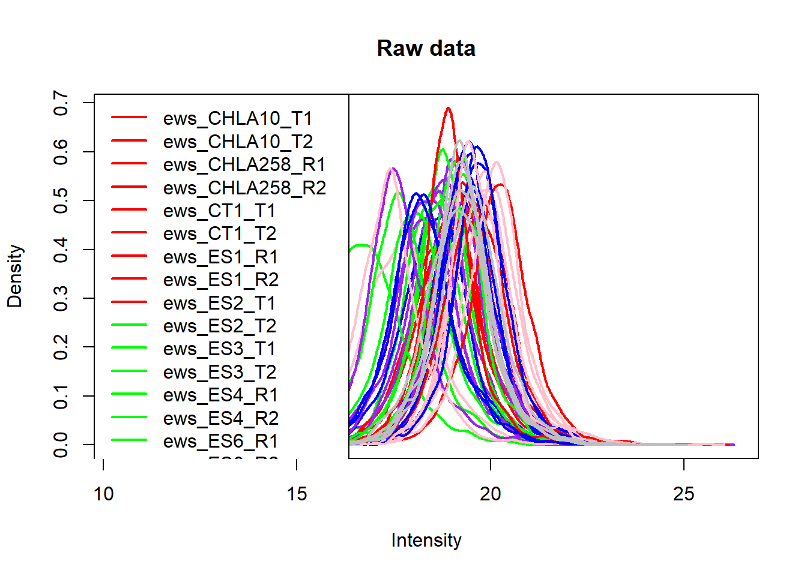
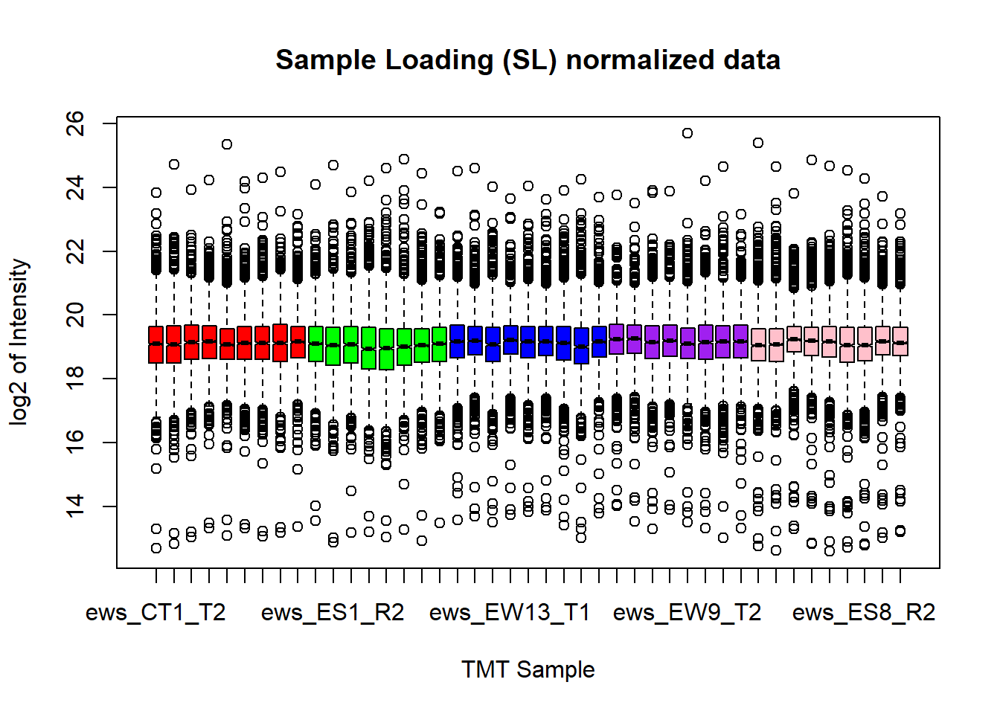

##########################################################################################
library('tidyverse')
library('limma')
library('RColorBrewer')
library('DESeq2')
library('DEqMS')
library('ggrepel')
library('stringr')
library('Biostrings')
library('OrgMassSpecR')sorensenSurface
Setting up the environment
These are packages you will need for this notebook. For exact versions used, please refer to the session info at the bottom of this notebook.
I want to set a base directory that we can use as a link to the directory where we will do most of the work. I use two directories here because the Workspace is what is pushed to GitHub and contains scripts and plot files, but the Repository is where more of the big data is stored that does not get pushed.
##########################################################################################
generalDatasets = 'C:/Users/chughes/Documents/bccrc/projectsRepository/generalDatasets'
baseWorkspace = 'C:/Users/chughes/Documents/bccrc/projectsWorkspace/sorensenLab/relatedToDlg2'
baseRepository = 'C:/Users/chughes/Documents/bccrc/projectsRepository/sorensenLab/relatedToDlg2'Data processing
Read in the peptide spectral match data. The TMT layout data are in the associated tmt_layout_surface.txt file.
##########################################################################################
##set the file locations
sampleInfo = c('plex1','plex2','plex3','plex4','plex5')
annotation = c('a','b','c','d','e')
psmFiles = file.path(baseRepository, 'database20220929_ewsExpressionDatabase/sorensenSurface/fragpipeAnalysis', sampleInfo, 'psm.tsv')
all(file.exists(psmFiles))[1] TRUE##process the identification data
psmData = tibble()
for (i in 1:length(sampleInfo)){
psmTemp = read_tsv(psmFiles[i], show_col_types = FALSE) %>%
dplyr::select(Peptide, `Protein ID`, Gene, Spectrum) %>%
dplyr::rename(sequence = Peptide,
accession = `Protein ID`,
symbol = Gene) %>%
dplyr::mutate(dataset = tolower(sampleInfo[i]),
scan = as.numeric(sub('.*Surface_Plex[0-9]\\.(.*)\\.[0-9]+\\.[0-9]+', '\\1', Spectrum))) %>%
dplyr::select(-Spectrum)
##
psmData = rbind(psmData, psmTemp)
}
psmData# A tibble: 57,596 x 5
sequence accession symbol dataset scan
<chr> <chr> <chr> <chr> <dbl>
1 GGSDGGGSHR P14209 CD99 plex1 1614
2 NEEDEGHSNSSPR Q14103 HNRNPD plex1 1752
3 TGSQDQEVHR P17813 ENG plex1 1781
4 EQGQNLAR P61224 RAP1B plex1 2192
5 NANAEPAVQR P14209 CD99 plex1 2212
6 TDNSESCVHGK P22413 ENPP1 plex1 2213
7 EEQTPQNK P00338 LDHA plex1 2284
8 HWDQNER P08195 SLC3A2 plex1 2325
9 DTDGGPK P53985 SLC16A1 plex1 2357
10 KPAGAAK P10412 H1-4 plex1 2369
# ... with 57,586 more rows##this is the function we will use to process the quant data
combineQuantFiles = function(filePath, ...){
quantData = read_tsv(filePath, show_col_types = FALSE) %>%
dplyr::select(MS2ScanNumber, `126Intensity`:`131CIntensity`)
colnames(quantData) = c('scan','tmt126C','tmt127N','tmt127C','tmt128N','tmt128C','tmt129N',
'tmt129C','tmt130N','tmt130C','tmt131N','tmt131C')
##
dataset = sub('.*EwingSurface_(.*)\\.raw_Matrix\\.txt', '\\1', filePath)
quantData$dataset = tolower(dataset)
##
return(quantData)
}
##process the quant data
quantFiles = list.files(paste(baseRepository, '/database20220929_ewsExpressionDatabase/sorensenSurface/quants/', sep = ''),
pattern = '_Matrix.txt', full.names = TRUE)
quantDataSet = lapply(quantFiles, combineQuantFiles)New names:
New names:
New names:
New names:
New names:
* `` -> `...102`allQuantData = do.call('rbind', quantDataSet)
##combine all of the data
psmQuant = psmData %>%
left_join(allQuantData)Joining, by = c("dataset", "scan")##filter the psm data
psmQuant = psmQuant %>%
dplyr::rowwise() %>%
dplyr::mutate(sampleSignal = sum(tmt126C:tmt131C, na.rm = TRUE)) %>%
dplyr::filter(sampleSignal >= 1000)
##roll into proteins
pro = psmQuant %>%
dplyr::ungroup() %>%
dplyr::select(-sampleSignal) %>%
dplyr::mutate(psmCount = 1) %>%
dplyr::group_by(sequence, accession, symbol, dataset) %>%
dplyr::summarise(across(tmt126C:tmt131C, mean, na.rm = TRUE), psmCount = sum(psmCount, na.rm = TRUE)) %>%
dplyr::mutate(pepCount = 1) %>%
dplyr::group_by(dataset, accession, symbol) %>%
dplyr::summarise(across(tmt126C:tmt131C, median, na.rm = TRUE), psmCount = sum(psmCount, na.rm = TRUE), pepCount = sum(pepCount, na.rm = TRUE))`summarise()` has grouped output by 'sequence', 'accession', 'symbol'. You can
override using the `.groups` argument.
`summarise()` has grouped output by 'dataset', 'accession'. You can override
using the `.groups` argument.##save the data
saveRDS(pro[pro$dataset == 'plex1',], paste(baseRepository, '/database20220929_ewsExpressionDatabase/sorensenSurface/dataset_rawProteinDatasetA.rds', sep = ''))
saveRDS(pro[pro$dataset == 'plex2',], paste(baseRepository, '/database20220929_ewsExpressionDatabase/sorensenSurface/dataset_rawProteinDatasetB.rds', sep = ''))
saveRDS(pro[pro$dataset == 'plex3',], paste(baseRepository, '/database20220929_ewsExpressionDatabase/sorensenSurface/dataset_rawProteinDatasetC.rds', sep = ''))
saveRDS(pro[pro$dataset == 'plex4',], paste(baseRepository, '/database20220929_ewsExpressionDatabase/sorensenSurface/dataset_rawProteinDatasetD.rds', sep = ''))
saveRDS(pro[pro$dataset == 'plex5',], paste(baseRepository, '/database20220929_ewsExpressionDatabase/sorensenSurface/dataset_rawProteinDatasetE.rds', sep = ''))Perform the IRS normalization.
##########################################################################################
##read in the annotation data
tmtAnno = read_tsv(paste(baseRepository, '/database20220929_ewsExpressionDatabase/sorensenSurface/tmt_layout_surface.txt', sep = ''), show_col_types = FALSE) %>%
dplyr::select(id, plex, label) %>%
dplyr::rename(dataset = plex,
sampleName = id) %>%
dplyr::mutate(dataset = paste('plex', dataset, sep = '')) %>%
dplyr::mutate(sampleName = ifelse(grepl('EMPTY', sampleName), paste(sampleName,'_',dataset,'_',label, sep = ''),
ifelse(grepl('PIS', sampleName), sampleName, paste('ews_',sampleName, sep = ''))))
##read in the data and combine with the annotation
proteinSetA = readRDS(paste(baseRepository, '/database20220929_ewsExpressionDatabase/sorensenSurface/dataset_rawProteinDatasetA.rds', sep = '')) %>%
dplyr::ungroup() %>%
dplyr::select(-dataset) %>%
dplyr::rename(psma = psmCount,
pepa = pepCount)
colnames(proteinSetA)[3:13] = tmtAnno[tmtAnno$dataset == 'plex1',]$sampleName
#
proteinSetB = readRDS(paste(baseRepository, '/database20220929_ewsExpressionDatabase/sorensenSurface/dataset_rawProteinDatasetB.rds', sep = '')) %>%
dplyr::ungroup() %>%
dplyr::select(-dataset) %>%
dplyr::rename(psmb = psmCount,
pepb = pepCount)
colnames(proteinSetB)[3:13] = tmtAnno[tmtAnno$dataset == 'plex2',]$sampleName
#
proteinSetC = readRDS(paste(baseRepository, '/database20220929_ewsExpressionDatabase/sorensenSurface/dataset_rawProteinDatasetC.rds', sep = '')) %>%
dplyr::ungroup() %>%
dplyr::select(-dataset) %>%
dplyr::rename(psmc = psmCount,
pepc = pepCount)
colnames(proteinSetC)[3:13] = tmtAnno[tmtAnno$dataset == 'plex3',]$sampleName
#
proteinSetD = readRDS(paste(baseRepository, '/database20220929_ewsExpressionDatabase/sorensenSurface/dataset_rawProteinDatasetD.rds', sep = '')) %>%
dplyr::ungroup() %>%
dplyr::select(-dataset) %>%
dplyr::rename(psmd = psmCount,
pepd = pepCount)
colnames(proteinSetD)[3:13] = tmtAnno[tmtAnno$dataset == 'plex4',]$sampleName
#
proteinSetE = readRDS(paste(baseRepository, '/database20220929_ewsExpressionDatabase/sorensenSurface/dataset_rawProteinDatasetE.rds', sep = '')) %>%
dplyr::ungroup() %>%
dplyr::select(-dataset) %>%
dplyr::rename(psme = psmCount,
pepe = pepCount)
colnames(proteinSetE)[3:13] = tmtAnno[tmtAnno$dataset == 'plex5',]$sampleName
##join all of the data
proteinSet = proteinSetA %>%
full_join(proteinSetB) %>%
full_join(proteinSetC) %>%
full_join(proteinSetD) %>%
full_join(proteinSetE)Joining, by = c("accession", "symbol")
Joining, by = c("accession", "symbol")
Joining, by = c("accession", "symbol")
Joining, by = c("accession", "symbol")##raw data check
targetSamples = proteinSet[,c(1:2, which(grepl('ews', colnames(proteinSet))))]
pooledSamples = proteinSet[,c(which(grepl('PIS', colnames(proteinSet))))]
psmSamples = proteinSet[,c(which(grepl('psm', colnames(proteinSet))))]
rawData = cbind(targetSamples, pooledSamples, psmSamples)
rawData[rawData == 0] = NA
rawData = subset(rawData, rowSums(is.na(rawData[,3:45])) < 20)
boxplot(log2(rawData[,3:50]), col = c(rep('red',9), rep('green',8), rep('blue',9), rep('purple',8), rep('pink',9),rep('grey',5)),
notch = TRUE, main = 'Raw data',
xlab = 'TMT Samples', ylab = 'log2 of Intensity')plotDensities(log2(rawData[,3:50]), col = c(rep('red',9), rep('green',8), rep('blue',9), rep('purple',8), rep('pink',9),rep('grey',5)),
main = 'Raw data')
format(round(colSums(rawData[,3:50], na.rm = TRUE), digits = 0), big.mark = ",") ews_CT1_T2 ews_ES1_R1 ews_CHLA10_T1 ews_ES6_R2 ews_EW9_T1
"1,151,844,785" "1,213,331,343" "1,552,198,245" "1,346,825,048" "1,287,370,680"
ews_ES6_R1 ews_EW8_R1 ews_ES8_R1 ews_Supermix_R1 ews_CHLA258_R2
" 845,384,301" " 914,612,594" "1,432,704,803" "1,576,698,153" "1,981,320,774"
ews_ES1_R2 ews_EW5_R1 ews_ES4_R2 ews_TC7_R1 ews_NCHEWS1_R1
"1,126,011,383" " 904,932,754" " 275,476,469" " 538,563,283" " 787,840,291"
ews_SKNEP_R1 ews_Supermix_R2 ews_TC32_T1 ews_EW12_T1 ews_ES4_R1
"1,602,715,129" "1,915,804,753" "2,232,556,323" "1,523,820,475" " 476,889,796"
ews_EW13_T1 ews_EW8_R2 ews_ES3_T1 ews_CT1_T1 ews_ES7_T1
"1,789,585,246" " 959,026,237" " 986,212,150" "1,361,820,968" " 682,098,487"
ews_Supermix_R3 ews_EW5_R2 ews_ES2_T2 ews_NCHEWS1_R2 ews_ES3_T2
"1,921,774,462" "1,337,327,717" "1,176,072,870" " 750,437,943" " 978,917,802"
ews_EW9_T2 ews_CHLA10_T2 ews_CHLA258_R1 ews_Supermix_R4 ews_SKNEP_R2
"1,454,878,810" "1,757,800,549" "2,690,919,567" "2,001,078,003" " 457,983,642"
ews_TC7_R2 ews_ES2_T1 ews_EW12_T2 ews_TC32_T2 ews_ES7_T2
" 390,723,897" "1,023,679,273" "1,485,786,621" "2,511,822,080" " 731,123,261"
ews_ES8_R2 ews_EW13_T2 ews_Supermix_R5 PIS_1 PIS_2
" 720,187,324" "1,891,655,738" "1,737,918,646" "1,370,159,259" "1,330,845,548"
PIS_3 PIS_4 PIS_5
"1,368,666,545" "1,599,307,819" "1,367,114,572" ##sample loading normalization
exp1Raw = rawData[c(3:11)]
exp2Raw = rawData[c(12:19)]
exp3Raw = rawData[c(20:28)]
exp4Raw = rawData[c(29:36)]
exp5Raw = rawData[c(37:45)]
target = mean(c(colSums(exp1Raw, na.rm = TRUE),
colSums(exp2Raw, na.rm = TRUE),
colSums(exp3Raw, na.rm = TRUE),
colSums(exp4Raw, na.rm = TRUE),
colSums(exp5Raw, na.rm = TRUE)))
normFacs = target / colSums(exp1Raw, na.rm = TRUE)
exp1Sl = sweep(exp1Raw, 2, normFacs, FUN = "*")
normFacs = target / colSums(exp2Raw, na.rm = TRUE)
exp2Sl = sweep(exp2Raw, 2, normFacs, FUN = "*")
normFacs = target / colSums(exp3Raw, na.rm = TRUE)
exp3Sl = sweep(exp3Raw, 2, normFacs, FUN = "*")
normFacs = target / colSums(exp4Raw, na.rm = TRUE)
exp4Sl = sweep(exp4Raw, 2, normFacs, FUN = "*")
normFacs = target / colSums(exp5Raw, na.rm = TRUE)
exp5Sl = sweep(exp5Raw, 2, normFacs, FUN = "*")
dataSl = cbind(exp1Sl, exp2Sl, exp3Sl, exp4Sl, exp5Sl)
boxplot(log2(dataSl), col = c(rep('red',9), rep('green',8), rep('blue',9), rep('purple',8), rep('pink',9),rep('grey',5)),
notch = TRUE, main = "Sample Loading (SL) normalized data",
xlab = 'TMT Sample', ylab = 'log2 of Intensity')
plotDensities(log2(dataSl), col = c(rep('red',9), rep('green',8), rep('blue',9), rep('purple',8), rep('pink',9),rep('grey',5)), main = "SL normalization")##IRS normalization
irs = tibble(rawData[,46:50])
colnames(irs) = c('sum1','sum2','sum3','sum4','sum5')
irs$average = apply(irs, 1, function(x) exp(mean(log(x),na.rm = TRUE)))
irs$fac1 = irs$average / irs$sum1
irs$fac2 = irs$average / irs$sum2
irs$fac3 = irs$average / irs$sum3
irs$fac4 = irs$average / irs$sum4
irs$fac5 = irs$average / irs$sum5
dataIrs = exp1Sl * irs$fac1
dataIrs = cbind(dataIrs, exp2Sl * irs$fac2)
dataIrs = cbind(dataIrs, exp3Sl * irs$fac3)
dataIrs = cbind(dataIrs, exp4Sl * irs$fac4)
dataIrs = cbind(dataIrs, exp5Sl * irs$fac5)
boxplot(log2(dataIrs), col = c(rep('red',9), rep('green',8), rep('blue',9), rep('purple',8), rep('pink',9),rep('grey',5)),
main = "Internal Reference Scaling (IRS) normalized data",
xlab = 'TMT Sample', ylab = 'log2 of Intensity', notch = TRUE)plotDensities(log2(dataIrs), col = c(rep('red',9), rep('green',8), rep('blue',9), rep('purple',8), rep('pink',9),rep('grey',5)), main = "IRS data")format(round(colSums(dataIrs, na.rm = TRUE), digits = 0), big.mark = ",") ews_CT1_T2 ews_ES1_R1 ews_CHLA10_T1 ews_ES6_R2 ews_EW9_T1
"1,252,317,111" "1,261,715,567" "1,261,814,003" "1,269,529,617" "1,269,698,869"
ews_ES6_R1 ews_EW8_R1 ews_ES8_R1 ews_Supermix_R1 ews_CHLA258_R2
"1,259,794,772" "1,267,073,509" "1,257,141,427" "1,268,374,554" "1,350,940,161"
ews_ES1_R2 ews_EW5_R1 ews_ES4_R2 ews_TC7_R1 ews_NCHEWS1_R1
"1,333,176,140" "1,347,154,740" "1,336,093,883" "1,339,955,317" "1,331,792,326"
ews_SKNEP_R1 ews_Supermix_R2 ews_TC32_T1 ews_EW12_T1 ews_ES4_R1
"1,354,486,884" "1,360,714,874" "1,270,505,644" "1,270,915,455" "1,263,320,499"
ews_EW13_T1 ews_EW8_R2 ews_ES3_T1 ews_CT1_T1 ews_ES7_T1
"1,275,316,601" "1,262,615,473" "1,253,838,248" "1,263,225,940" "1,247,729,638"
ews_Supermix_R3 ews_EW5_R2 ews_ES2_T2 ews_NCHEWS1_R2 ews_ES3_T2
"1,258,236,476" "1,095,219,562" "1,094,312,882" "1,076,652,167" "1,086,233,167"
ews_EW9_T2 ews_CHLA10_T2 ews_CHLA258_R1 ews_Supermix_R4 ews_SKNEP_R2
"1,086,756,504" "1,076,967,398" "1,080,069,026" "1,089,083,106" "1,233,186,959"
ews_TC7_R2 ews_ES2_T1 ews_EW12_T2 ews_TC32_T2 ews_ES7_T2
"1,235,332,496" "1,249,800,977" "1,240,697,758" "1,241,361,011" "1,236,709,165"
ews_ES8_R2 ews_EW13_T2 ews_Supermix_R5
"1,236,031,812" "1,243,516,989" "1,245,971,910" ##post-normalization clustering
colVec = c(rep('red',9), rep('green',8), rep('blue',9), rep('purple',8), rep('pink',9))
plotMDS(log2(dataIrs), col = colVec, main = "IRS clusters group by condition")Recombine the data with the accessions and save the final file.
##########################################################################################
finalIrsData = as_tibble(cbind(rawData[,c(1:2,51:55)], dataIrs))
##save data
saveRDS(finalIrsData, paste(baseRepository, '/database20220929_ewsExpressionDatabase/sorensenSurface/dataset_proteinSetABCDEIrsNormalized.rds', sep = ''))Reshape the data and output the final dataset.
##########################################################################################
##calculate some final scores, using the iBAQ value as a score in this case
finalData = as.data.frame(readRDS(paste(baseRepository, '/database20220929_ewsExpressionDatabase/sorensenSurface/dataset_proteinSetABCDEIrsNormalized.rds', sep = '')))
##for the iBAQ calculation, we need the number of theoretical tryptic peptides
proteinFasta = readAAStringSet('D:/databases/projectEwsDlg2/proteomicsIndex/2022-09-27-reviewed-contam-UP000005640.fas')
proteinDatabase = tibble('proteinNames' = names(proteinFasta)) %>%
dplyr::mutate(accession = sapply(str_split(proteinNames, '\\|'), '[', 2)) %>%
dplyr::mutate(length = width(proteinFasta)) %>%
dplyr::select(-proteinNames)
trypticPeptides = vector()
detectableLength = vector()
for (i in 1:length(proteinFasta)){
aaSeq = as.character(proteinFasta[[i]])
seqDigest = OrgMassSpecR::Digest(aaSeq, enzyme = 'trypsin', missed = 0, custom = list(code = c('X','U','Z','B'), mass = c(50, 60, 70, 80)))
seqDigest$pepLength = (seqDigest$stop - seqDigest$start) + 1
seqDigestSub = subset(seqDigest, (seqDigest$pepLength > 5) & (seqDigest$pepLength < 31))
trypticPeptides = c(trypticPeptides, nrow(seqDigestSub))
detectableLength = c(detectableLength, sum(seqDigestSub$pepLength, na.rm = TRUE))
}Warning in OrgMassSpecR::Digest(aaSeq, enzyme = "trypsin", missed = 0, custom =
list(code = c("X", : sequence does not contain cleavage sites
Warning in OrgMassSpecR::Digest(aaSeq, enzyme = "trypsin", missed = 0, custom =
list(code = c("X", : sequence does not contain cleavage sites
Warning in OrgMassSpecR::Digest(aaSeq, enzyme = "trypsin", missed = 0, custom =
list(code = c("X", : sequence does not contain cleavage sites
Warning in OrgMassSpecR::Digest(aaSeq, enzyme = "trypsin", missed = 0, custom =
list(code = c("X", : sequence does not contain cleavage sites
Warning in OrgMassSpecR::Digest(aaSeq, enzyme = "trypsin", missed = 0, custom =
list(code = c("X", : sequence does not contain cleavage sites
Warning in OrgMassSpecR::Digest(aaSeq, enzyme = "trypsin", missed = 0, custom =
list(code = c("X", : sequence does not contain cleavage sites
Warning in OrgMassSpecR::Digest(aaSeq, enzyme = "trypsin", missed = 0, custom =
list(code = c("X", : sequence does not contain cleavage sites
Warning in OrgMassSpecR::Digest(aaSeq, enzyme = "trypsin", missed = 0, custom =
list(code = c("X", : sequence does not contain cleavage sites
Warning in OrgMassSpecR::Digest(aaSeq, enzyme = "trypsin", missed = 0, custom =
list(code = c("X", : sequence does not contain cleavage sites
Warning in OrgMassSpecR::Digest(aaSeq, enzyme = "trypsin", missed = 0, custom =
list(code = c("X", : sequence does not contain cleavage sites
Warning in OrgMassSpecR::Digest(aaSeq, enzyme = "trypsin", missed = 0, custom =
list(code = c("X", : sequence does not contain cleavage sites
Warning in OrgMassSpecR::Digest(aaSeq, enzyme = "trypsin", missed = 0, custom =
list(code = c("X", : sequence does not contain cleavage sites#now add to the database
proteinDatabase$detectablePeptides = trypticPeptides
proteinDatabase$detectableLength = detectableLength
##incorporate with the proteomics data
finalDataSub = tibble(subset(finalData, rowSums(is.na(finalData[,3:7])) < 2)) %>%
dplyr::select(names(finalData)[!grepl('Super', colnames(finalData))]) %>%
dplyr::select(accession, symbol, ews_CT1_T2:ews_EW13_T2) %>%
dplyr::left_join(proteinDatabase) %>%
dplyr::rowwise() %>%
dplyr::mutate(meanIntensity = rowMeans(across(ews_CT1_T2:ews_EW13_T2), na.rm = TRUE)) %>%
dplyr::mutate(sorensenSurface = log10(meanIntensity / detectablePeptides)) %>%
dplyr::select(accession, symbol, sorensenSurface)Joining, by = "accession"##write the data
saveRDS(finalDataSub, paste(baseRepository, '/database20220929_ewsExpressionDatabase/sorensenSurface/dataset_sorensenSurface.rds', sep = ''))
write.table(finalDataSub,
paste(baseRepository, '/database20220929_ewsExpressionDatabase/sorensenSurface/dataset_sorensenSurface.csv', sep = ''),
sep = ',', row.names = FALSE, quote = FALSE)Finish up.
Session info
##########################################################################################
sessionInfo()R version 4.1.3 (2022-03-10)
Platform: x86_64-w64-mingw32/x64 (64-bit)
Running under: Windows 10 x64 (build 19042)
Matrix products: default
locale:
[1] LC_COLLATE=English_Canada.1252 LC_CTYPE=English_Canada.1252
[3] LC_MONETARY=English_Canada.1252 LC_NUMERIC=C
[5] LC_TIME=English_Canada.1252
attached base packages:
[1] grid stats4 stats graphics grDevices utils datasets
[8] methods base
other attached packages:
[1] OrgMassSpecR_0.5-3 Biostrings_2.62.0
[3] XVector_0.34.0 ggrepel_0.9.2
[5] DEqMS_1.12.1 DESeq2_1.34.0
[7] SummarizedExperiment_1.24.0 Biobase_2.54.0
[9] MatrixGenerics_1.6.0 matrixStats_0.62.0
[11] GenomicRanges_1.46.1 GenomeInfoDb_1.30.1
[13] IRanges_2.28.0 S4Vectors_0.32.4
[15] BiocGenerics_0.40.0 RColorBrewer_1.1-3
[17] limma_3.50.3 forcats_0.5.2
[19] stringr_1.4.1 dplyr_1.0.10
[21] purrr_0.3.5 readr_2.1.3
[23] tidyr_1.2.1 tibble_3.1.8
[25] ggplot2_3.4.0 tidyverse_1.3.2
loaded via a namespace (and not attached):
[1] bitops_1.0-7 fs_1.5.2 bit64_4.0.5
[4] lubridate_1.9.0 httr_1.4.4 tools_4.1.3
[7] backports_1.4.1 utf8_1.2.2 R6_2.5.1
[10] DBI_1.1.3 colorspace_2.0-3 withr_2.5.0
[13] tidyselect_1.2.0 bit_4.0.5 compiler_4.1.3
[16] cli_3.4.1 rvest_1.0.3 xml2_1.3.3
[19] DelayedArray_0.20.0 scales_1.2.1 genefilter_1.76.0
[22] digest_0.6.30 rmarkdown_2.18 pkgconfig_2.0.3
[25] htmltools_0.5.3 dbplyr_2.2.1 fastmap_1.1.0
[28] htmlwidgets_1.5.4 rlang_1.0.6 readxl_1.4.1
[31] RSQLite_2.2.18 rstudioapi_0.14 generics_0.1.3
[34] jsonlite_1.8.3 vroom_1.6.0 BiocParallel_1.28.3
[37] googlesheets4_1.0.1 RCurl_1.98-1.9 magrittr_2.0.3
[40] GenomeInfoDbData_1.2.7 Matrix_1.5-3 Rcpp_1.0.9
[43] munsell_0.5.0 fansi_1.0.3 lifecycle_1.0.3
[46] stringi_1.7.8 yaml_2.3.6 zlibbioc_1.40.0
[49] blob_1.2.3 parallel_4.1.3 crayon_1.5.2
[52] lattice_0.20-45 splines_4.1.3 haven_2.5.1
[55] annotate_1.72.0 KEGGREST_1.34.0 hms_1.1.2
[58] locfit_1.5-9.6 knitr_1.40 pillar_1.8.1
[61] geneplotter_1.72.0 reprex_2.0.2 XML_3.99-0.12
[64] glue_1.6.2 evaluate_0.18 modelr_0.1.10
[67] png_0.1-7 vctrs_0.5.1 tzdb_0.3.0
[70] cellranger_1.1.0 gtable_0.3.1 assertthat_0.2.1
[73] cachem_1.0.6 xfun_0.34 xtable_1.8-4
[76] broom_1.0.1 survival_3.4-0 googledrive_2.0.0
[79] gargle_1.2.1 memoise_2.0.1 AnnotationDbi_1.56.2
[82] timechange_0.1.1 ellipsis_0.3.2